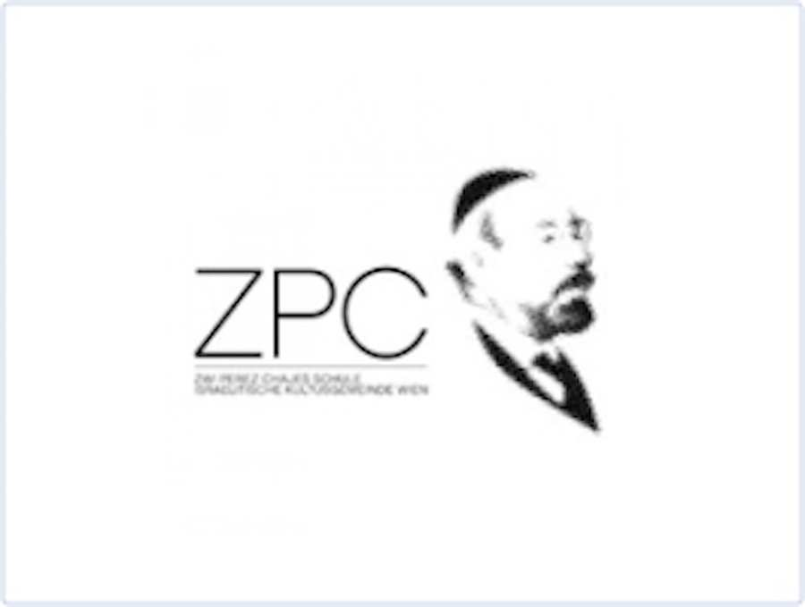
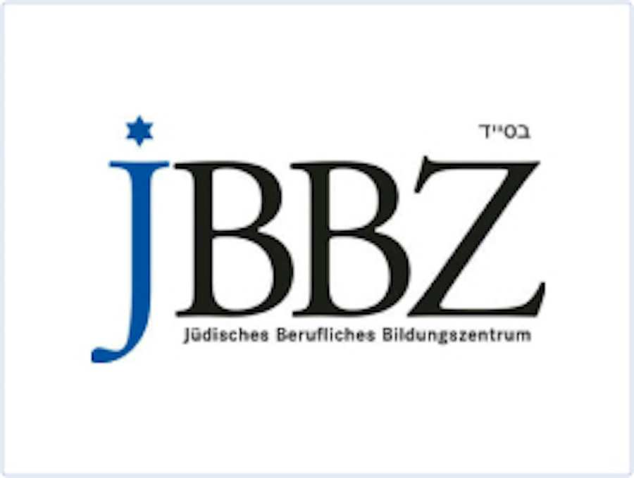

Schools & Education
With its wide range of educational, cultural and young people's services, the Jewish Community of Vienna has a great deal to offer families and children. In this way we work together to safeguard Jewish life in Vienna and Austria and offer our children a sense of community that enables them to face the future with confidence. Vienna has a very strong Jewish infrastructure and offers all kinds of educational opportunities for children and also for adults. IKG Vienna runs two educational institutions, the Zwi Perez Chajes School and the Jewish Vocational Training Centre (JBBZ). There are also other Jewish daycare and school services in Vienna which reflect the full diversity of Judaism in Vienna.
Projects

Yiddish Children’s Choir
Jewish children's choir, which not only sings together, but also learns prayers.
Learn more

Mixed pacho
Jewish families plan joint activities such as outings, classes or holiday experiences as part of Mischpachot.
Learn moreSERVICES FOR FAMILIES IN VIENNA

The Zwi Perez Chajes School
The Zwi Perez Chajes School is the main educational institution for our community. It is maintained by the Association for the Preservation of the Zwi Perez Chajes School of the Jewish Community of Vienna. A four-storey building (designed for around 600 children) houses a kindergarten (with crèche), a primary school with daycare provision and a Realgymnasium (secondary school). The school pursues the goals of "Jewish upbringing, general education, personal development and integration" in one complex entity. This combination of elements, which is reflected in every aspect of what goes on at the kindergarten and school, is what characterises the ZPC school and makes it so special. For more information, please go to: https://www.zpc.at/

The Jewish Vocational Training Centre
The JBBZ (Jewish Vocational Training Centre) is an integration project that is the only one of its kind in Europe. As an institution under the auspices of the Public Employment Service (AMS), it makes an important contribution to the integration of Jewish people in the Austrian labour market.
Possible training pathways at the JBBZ include the 9th year of compulsory schooling, and apprenticeships for young people and adults in the fields of IT technology, orthopaedic technology, office management, banking and bookselling. Basic and advanced courses in languages and social skills, along with vocational training and preparation for the vocational university entrance examination, round off the services that are available.
The aim of the JBBZ is to be "best of class". That means developing students' potential to the full by giving them qualifications which will guarantee their integration in the Austrian jobs market.
For more information, please refer to https://www.jbbz.at/
Jewish religious instruction
Part of IKG Vienna's educational mandate is to offer all schoolchildren attending a public school in Vienna, in all grades, officially recognised Jewish religious education as a compulsory subject. That is to say, regardless of their educational institution, from primary school through to their school-leaving exams, students can attend Jewish religious education classes. They can sign up through their own school. At the end of this religious instruction, many students take a school-leaving exam in "Jewish Religion". For many years, this final-year class has been taught by our community rabbi, Schlomo Hofmeister.